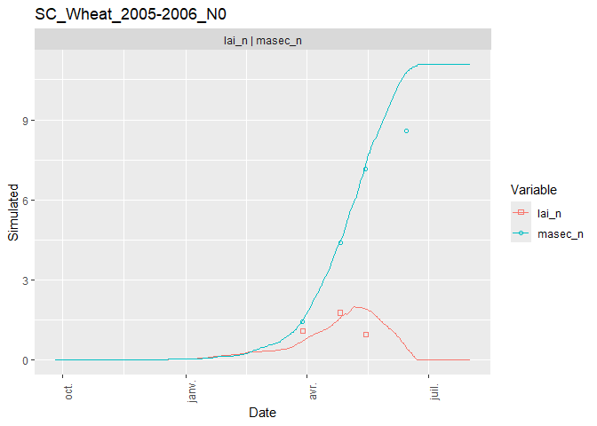
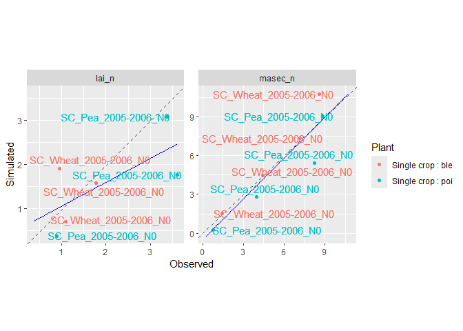
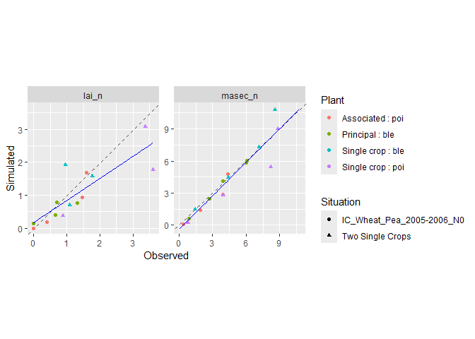
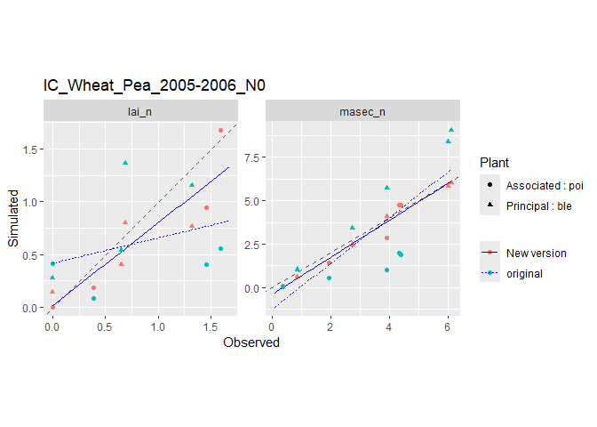
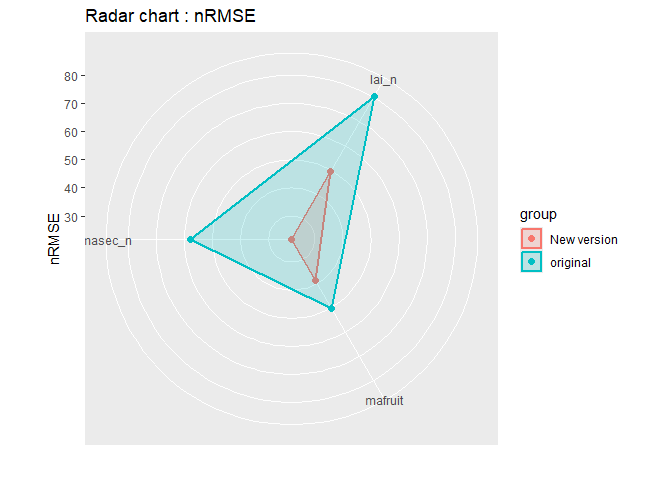
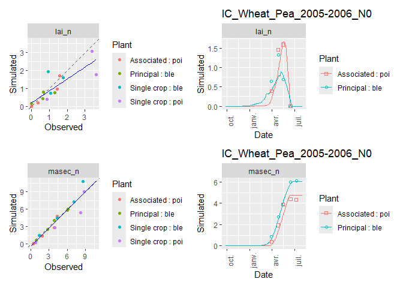

CroPlotR
CroPlotR aims at the standardization of the process of analyzing the outputs from crop models such as STICS, APSIM or really any model.
Its use does not need any particular adaptation if your model has been wrapped with the CroptimizR package.
If you want to be notified when a new release of this package is made, you can tick the Releases box in the “Watch / Unwatch => Custom” menu at the top right of this page.
Table of Contents
1. Installation
You can install the released version of CroPlotR from Github either using devtools or the lightweight remotes package:
- With
devtools
devtools::install_github("SticsRPacks/CroPlotR@*release")- With
remotes
# install.packages("remotes")
remotes::install_github("SticsRPacks/CroPlotR@*release")Normally, all the package dependencies will be installed for CRAN packages.
2. Examples
At the moment, only one function is exported for plots plot() (and its alias autoplot()), and one for the statistics summary(). These functions should be the only one you need for all your plots and summary statistics. Additional ones are provided to simplify the manipulation of simulated data (see 2.3 Data manipulation).
In the following, an example using the STICS crop model is presented. If you want to use another model for which a wrapper has been designed for the CroptimizR package, just consider defining the sim variable used in the examples below as sim <- result$sim_list, where result is the list returned by your model wrapper. Examples of use of CroPlotR with Stics and APSIM model wrappers can be found in CroptimizR’s website (see Articles tab).
In the following example a simulation of three situations (called USM in STICS) with their observations is used:
- an intercrop of Wheat and pea
- a Pea in sole crop
- a Wheat in sole crop
Let’s import the simulation and observation data:
library(CroPlotR)
#> Learn CroPlotR at: https://SticsRPacks.github.io/CroPlotR
# Importing an example with three situations with observation:
workspace= system.file(file.path("extdata", "stics_example_1"), package = "CroPlotR")
situations= SticsRFiles::get_usms_list(usm_path = file.path(workspace,"usms.xml"))
sim= SticsRFiles::get_sim(workspace = workspace, usms_filepath = file.path(workspace,"usms.xml"))
#> [1] "mod_spIC_Wheat_Pea_2005-2006_N0.sti" "mod_saIC_Wheat_Pea_2005-2006_N0.sti"
#> [1] "mod_sSC_Pea_2005-2006_N0.sti"
#> [1] "mod_sSC_Wheat_2005-2006_N0.sti"
obs= SticsRFiles::get_obs(workspace = workspace, usm_name = situations, usms_filepath = file.path(workspace,"usms.xml"))
#> [1] "IC_Wheat_Pea_2005-2006_N0p.obs" "IC_Wheat_Pea_2005-2006_N0a.obs"
#> [1] "SC_Pea_2005-2006_N0.obs"
#> [1] "SC_Wheat_2005-2006_N0.obs"2.1 Plotting
2.1.1 Dynamic plots
Here is an application of dynamic plots for the 3 situations:
p <- plot(sim, obs= obs)Note that the obs argument is explicitly named. This is because the first argument of the function is ... (we’ll see why in a minute).
The plot function returns a named list of ggplot objects.
To plot all of them, just do
p
#> $`IC_Wheat_Pea_2005-2006_N0`


or simply
plot(sim, obs= obs)In this case, the elements of the list take the name of the situations.
names(p)
#> [1] "IC_Wheat_Pea_2005-2006_N0" "SC_Pea_2005-2006_N0"
#> [3] "SC_Wheat_2005-2006_N0"To plot only one of the graph, access it using its name:
p$`IC_Wheat_Pea_2005-2006_N0`
or index:
p[[1]]It is possible to aggregate plots of multiple situations on the same graph when situations follow one another over time. This can be done using the successive parameter.
workspace= system.file(file.path("extdata", "stics_example_successive"), package = "CroPlotR")
situations= SticsRFiles::get_usms_list(usm_path = file.path(workspace,"usms.xml"))
sim_rot= SticsRFiles::get_sim(workspace = workspace, usm_name = situations, usms_filepath = file.path(workspace, "usms.xml"))
#> [1] "mod_sdemo_Wheat1.sti"
#> [1] "mod_sdemo_BareSoil2.sti"
#> [1] "mod_sdemo_maize3.sti"
plot(sim_rot, var = c("resmes","masec_n"), successive = list(list("demo_Wheat1","demo_BareSoil2","demo_maize3")))
#> $`demo_Wheat1 | demo_BareSoil2 | demo_maize3 | `
We can also overlay variables thanks to the “overlap” parameter with dynamic plots.


Note that it is not possible to scale the variables right now from the plot function (see issue #2). If you want to do so, you are encouraged to scale before the plotting function, and to add a second axis using sec_axis on the resulting plot.
2.1.2 Scatter plots
Here are the same plots, but presented as scatter plots:
# Only plotting the first situation for this one:
plots= plot(sim, obs= obs, type = "scatter", all_situations = FALSE)
plots$`IC_Wheat_Pea_2005-2006_N0`
Residues can also be represented against observations:
# Only plotting the first situation again:
plots= plot(sim, obs= obs, type = "scatter", select_scat = "res", all_situations = FALSE)
plots[[1]]
All these data can also be represented with a single graph for all situations:
plot(sim, obs= obs, type = "scatter", all_situations = TRUE)
#> $all_situations
When plotting residual scatter plots, reference_var allows to choose the reference variable on the x-axis. Thus, the observations or simulations of this reference variable (to be chosen by suffixing the variable name by “_obs” or “_sim”) will be compared to the residuals of each of the variables.
plot(sim, obs= obs, type = "scatter", select_scat="res", all_situations = TRUE,
reference_var = "lai_n_sim")
#> $all_situations
The points on the graphs can be shown in different shapes to differentiate between situations when all_situations = TRUE. If desired, the names of the situations can be displayed.
plot(sim, obs= obs[c(2,3)], type = "scatter", all_situations = TRUE, shape_sit = "txt")
#> $all_situations
As you can see, this can quickly become unreadable depending on the number of points and length of situation names; That is why you can simply assign a different symbol to each situation.
plot(sim, obs= obs, type = "scatter", all_situations = TRUE, shape_sit = "symbol")
#> $all_situations
It is also possible to represent a group of situations with the same symbol when, for example, clusters are identified.
plot(sim, obs= obs, type = "scatter", all_situations = TRUE,
shape_sit = "group", situation_group = list(list("SC_Pea_2005-2006_N0","SC_Wheat_2005-2006_N0")))
#> $all_situations
You can also name your situation_group list and thus customize (e.g shorten) the plot legend.
plot(sim, obs= obs, type = "scatter", all_situations = TRUE, shape_sit = "group",
situation_group = list("Two Single Crops"=list("SC_Pea_2005-2006_N0","SC_Wheat_2005-2006_N0")))
#> $all_situations
By default, all variables are returned by plot(), but you can filter them using the var argument:

Error bars related to observations can also be added to the graph using the obs_sd parameter which must be of the same shape as obs. In our example, we will create a false data frame with the only purpose of having a preview of the result. To have 95% confidence, the error bar is equal to two standard deviations on each side of the point.
obs_sd = obs
obs_sd$`SC_Pea_2005-2006_N0`[, !(names(obs_sd$`SC_Pea_2005-2006_N0`) %in% c("Date","Plant"))]= 0.05*obs_sd$`SC_Pea_2005-2006_N0`[, !(names(obs_sd$`SC_Pea_2005-2006_N0`) %in% c("Date","Plant"))]
obs_sd$`SC_Wheat_2005-2006_N0`[, !(names(obs_sd$`SC_Pea_2005-2006_N0`) %in% c("Date","Plant"))]= 0.2*obs_sd$`SC_Wheat_2005-2006_N0`[, !(names(obs_sd$`SC_Pea_2005-2006_N0`) %in% c("Date","Plant"))]
plot(sim, obs= obs, obs_sd= obs_sd, type = "scatter", all_situations = TRUE)
#> $all_situations
2.1.3 Group comparison
We can compare groups of simulations alongside by simply adding the simulations objects one after the other (that is why the first argument of the function is ...). Group simulations can be the results of simulations from different model versions, or simulations with different parameter values.
workspace2= system.file(file.path("extdata", "stics_example_2"), package = "CroPlotR")
sim2= SticsRFiles::get_sim(workspace = workspace2, usms_filepath = file.path(workspace2,"usms.xml"))
#> [1] "mod_spIC_Wheat_Pea_2005-2006_N0.sti" "mod_saIC_Wheat_Pea_2005-2006_N0.sti"
plot(sim, sim2, obs= obs, all_situations = FALSE)
#> $`IC_Wheat_Pea_2005-2006_N0`
Here only one plot is outputed because workspace2 only contains the intercrop situation.
We can also name the corresponding group in the plot by naming them while passing to the plot() function:
plot("New version"= sim, original= sim2, obs= obs, type = "scatter", all_situations = FALSE)
#> $`IC_Wheat_Pea_2005-2006_N0`
2.1.4 Plot saving
The plots can be saved to disk using the save_plot_png() function as follows:
plots= plot("New version"= sim, original= sim2, obs= obs, type = "scatter")
save_plot_png(plot = plots, path = "path/to/directory",suffix = "_scatter")
# or by piping:
plots= plot("New version"= sim, original= sim2, obs= obs, type = "scatter")%>%
save_plot_png(., path = "path/to/directory",suffix = "_scatter")They can also be saved using the save_plot_pdf() function that which, from a list of ggplots, generates a pdf file. If the file_per_var parameter is TRUE, in this case the function generates one pdf file per variable.
plots = plot(sim, obs = obs)
save_plot_pdf(plot = plots, path = "path/to/directory", file_per_var = FALSE)2.1.5 Plot extracting
When we have plots with several variables and several situations, the extract_plot function allows to keep the situations and variables that we need.
In the following example, we want to extract the intercrop situation and the “masec_n” variable.
plots= plot(sim, obs= obs, type = "scatter", all_situations = FALSE)
extract_plot(plots,situations=c("IC_Wheat_Pea_2005-2006_N0"),var=c("masec_n"))
#> $`IC_Wheat_Pea_2005-2006_N0`
2.2 Statistics
2.2.1 Simple case
Here is an application of summary statistics for the 3 situations:
summary(sim, obs= obs, all_situations = FALSE)| group | situation | variable | n_obs | mean_obs | mean_sim | r_means | sd_obs | sd_sim | CV_obs | CV_sim | R2 | SS_res | Inter | Slope | RMSE | RMSEs | RMSEu | nRMSE | rRMSE | rRMSEs | rRMSEu | pMSEs | pMSEu | Bias2 | SDSD | LCS | rbias2 | rSDSD | rLCS | MAE | FVU | MSE | EF | Bias | ABS | MAPE | RME | tSTUD | tLimit | Decision |
|---|---|---|---|---|---|---|---|---|---|---|---|---|---|---|---|---|---|---|---|---|---|---|---|---|---|---|---|---|---|---|---|---|---|---|---|---|---|---|---|---|
| Version_1 | IC_Wheat_Pea_2005-2006_N0 | lai_n | 8 | 0.762500 | 0.6135987 | 80.47197 | 0.6326306 | 0.5508654 | 82.96794 | 89.77616 | 0.8082574 | 0.7167893 | 0.0166871 | 0.7828349 | 0.2993304 | 0.1966900 | 0.2256362 | 39.25644 | 0.3925644 | 0.2579541 | 0.2959163 | 0.4317805 | 0.5682195 | 0.0221716 | 0.0066855 | 0.0703740 | 0.0381344 | 0.0114989 | 0.1210410 | 0.2323863 | 0.1925422 | 0.0895987 | 0.7441455 | -0.1489013 | 0.2323863 | Inf | Inf | -1.5171559 | 2.364624 | OK |
| Version_1 | IC_Wheat_Pea_2005-2006_N0 | masec_n | 10 | 3.450000 | 3.2975700 | 95.58174 | 1.9615810 | 2.1296432 | 56.85742 | 64.58220 | 0.9631080 | 1.8866224 | -0.3782750 | 1.0654623 | 0.4343527 | 0.1951283 | 0.3880557 | 12.58993 | 0.1258993 | 0.0565589 | 0.1124799 | 0.2018159 | 0.7981841 | 0.0232349 | 0.0282449 | 0.1555633 | 0.0019521 | 0.0023730 | 0.0130698 | 0.3477720 | 0.0477697 | 0.1886622 | 0.9455209 | -0.1524300 | 0.3477720 | 0.1927375 | -0.1469491 | -1.1243151 | 2.262157 | OK |
| Version_1 | SC_Pea_2005-2006_N0 | lai_n | 3 | 2.622222 | 1.7386367 | 66.30394 | 1.5135732 | 1.3463799 | 57.72101 | 77.43883 | 0.6945994 | 3.7558828 | -0.2053841 | 0.7413638 | 1.1189106 | 0.9396204 | 0.6075149 | 42.67032 | 0.4267032 | 0.3583298 | 0.2316794 | 0.7052029 | 0.2947971 | 0.7807234 | 0.0279536 | 0.6789027 | 0.1135424 | 0.0040654 | 0.0987344 | 0.8835856 | 0.3085491 | 1.2519609 | 0.1802618 | -0.8835856 | 0.8835856 | 0.3901011 | -0.3901011 | -1.8203030 | 4.302653 | OK |
| Version_1 | SC_Pea_2005-2006_N0 | masec_n | 4 | 5.451667 | 4.3825425 | 80.38904 | 3.7848396 | 3.7494028 | 69.42537 | 85.55314 | 0.8907017 | 9.3636018 | -0.7144037 | 0.9349336 | 1.5300001 | 1.0901888 | 1.0734937 | 28.06481 | 0.2806481 | 0.1999735 | 0.1969111 | 0.5077156 | 0.4922844 | 1.1430265 | 0.0012558 | 1.5959095 | 0.0384590 | 0.0000423 | 0.0536970 | 1.1660625 | 0.1114949 | 2.3409005 | 0.7821153 | -1.0691242 | 1.1660625 | 0.3308096 | -0.3198354 | -1.6919332 | 3.182446 | OK |
| Version_1 | SC_Wheat_2005-2006_N0 | lai_n | 3 | 1.273333 | 1.4022867 | 110.12723 | 0.4396684 | 0.6236645 | 34.52893 | 44.47482 | 0.0098002 | 1.1058377 | 1.2234797 | 0.1404243 | 0.6071347 | 0.3344381 | 0.5067186 | 47.68074 | 0.4768074 | 0.2626477 | 0.3979465 | 0.3034319 | 0.6965681 | 0.0166290 | 0.0338546 | 0.4941208 | 0.0102561 | 0.0208801 | 0.3047537 | 0.5115933 | 2.7312604 | 0.3686126 | -1.8602948 | 0.1289533 | 0.5115933 | 0.4881989 | 0.1825306 | 0.3073876 | 4.302653 | OK |
| Version_1 | SC_Wheat_2005-2006_N0 | masec_n | 4 | 5.393750 | 6.0159025 | 111.53469 | 3.1594630 | 3.9552603 | 58.57637 | 65.74675 | 0.9637756 | 4.8187352 | -0.6129841 | 1.2289940 | 1.0975809 | 0.8829841 | 0.6519378 | 20.34912 | 0.2034912 | 0.1637050 | 0.1208691 | 0.6471914 | 0.3528086 | 0.3870737 | 0.6332935 | 0.4568533 | 0.0133049 | 0.0217682 | 0.0157035 | 0.6221525 | 0.1092090 | 1.2046838 | 0.8390892 | 0.6221525 | 0.6221525 | 0.0866369 | 0.0866369 | 1.1917478 | 3.182446 | OK |
Note that as for the plot() function the obs argument is explicitly named. This is because the first argument of the function is ... to be able to compare groups (i.e. model versions or simulation with different parameter values).
And as for the plot() function again, it is possible to compute the statistical criteria for all situations at once.
summary(sim, obs= obs, all_situations = TRUE)| group | situation | variable | n_obs | mean_obs | mean_sim | r_means | sd_obs | sd_sim | CV_obs | CV_sim | R2 | SS_res | Inter | Slope | RMSE | RMSEs | RMSEu | nRMSE | rRMSE | rRMSEs | rRMSEu | pMSEs | pMSEu | Bias2 | SDSD | LCS | rbias2 | rSDSD | rLCS | MAE | FVU | MSE | EF | Bias | ABS | MAPE | RME | tSTUD | tLimit | Decision |
|---|---|---|---|---|---|---|---|---|---|---|---|---|---|---|---|---|---|---|---|---|---|---|---|---|---|---|---|---|---|---|---|---|---|---|---|---|---|---|---|---|
| Version_1 | all_situations | lai_n | 14 | 1.270476 | 1.023683 | 80.57474 | 1.085427 | 0.8698547 | 85.43465 | 84.97306 | 0.6923882 | 5.57851 | 0.1764799 | 0.6668389 | 0.6312408 | 0.4270089 | 0.4648960 | 49.68537 | 0.4968537 | 0.3361015 | 0.3659227 | 0.4575977 | 0.5424023 | 0.0609069 | 0.0464714 | 0.3170527 | 0.0377341 | 0.0287907 | 0.1964257 | 0.4317590 | 0.3085546 | 0.398465 | 0.6357717 | -0.2467933 | 0.4317590 | Inf | Inf | -1.5315489 | 2.160369 | OK |
| Version_1 | all_situations | masec_n | 18 | 4.326759 | 4.142749 | 95.74715 | 2.710052 | 2.9836105 | 62.63468 | 72.02007 | 0.8994510 | 16.06896 | -0.3749370 | 1.0441269 | 0.9448386 | 0.2176378 | 0.9194312 | 21.83710 | 0.2183710 | 0.0503004 | 0.2124988 | 0.0530583 | 0.9469417 | 0.0338598 | 0.0748344 | 0.8345469 | 0.0018087 | 0.0039974 | 0.0445785 | 0.5905878 | 0.1238200 | 0.892720 | 0.8712985 | -0.1840104 | 0.5905878 | 0.1998423 | -0.1334603 | -0.8186637 | 2.109816 | OK |
2.2.2 Several groups
We can get statistics for each group of simulations by simply adding the simulations objects one after the other (as for the plot() function).
summary(sim, sim2, obs= obs)| group | situation | variable | n_obs | mean_obs | mean_sim | r_means | sd_obs | sd_sim | CV_obs | CV_sim | R2 | SS_res | Inter | Slope | RMSE | RMSEs | RMSEu | nRMSE | rRMSE | rRMSEs | rRMSEu | pMSEs | pMSEu | Bias2 | SDSD | LCS | rbias2 | rSDSD | rLCS | MAE | FVU | MSE | EF | Bias | ABS | MAPE | RME | tSTUD | tLimit | Decision |
|---|---|---|---|---|---|---|---|---|---|---|---|---|---|---|---|---|---|---|---|---|---|---|---|---|---|---|---|---|---|---|---|---|---|---|---|---|---|---|---|---|
| Version_1 | all_situations | lai_n | 14 | 1.270476 | 1.0236829 | 80.57474 | 1.0854269 | 0.8698547 | 85.43465 | 84.97306 | 0.6923882 | 5.578510 | 0.1764799 | 0.6668389 | 0.6312408 | 0.4270089 | 0.4648960 | 49.68537 | 0.4968537 | 0.3361015 | 0.3659227 | 0.4575977 | 0.5424023 | 0.0609069 | 0.0464714 | 0.3170527 | 0.0377341 | 0.0287907 | 0.1964257 | 0.4317590 | 0.3085546 | 0.3984650 | 0.6357717 | -0.2467933 | 0.4317590 | Inf | Inf | -1.5315489 | 2.160369 | OK |
| Version_1 | all_situations | masec_n | 18 | 4.326759 | 4.1427489 | 95.74715 | 2.7100517 | 2.9836105 | 62.63468 | 72.02007 | 0.8994510 | 16.068959 | -0.3749370 | 1.0441269 | 0.9448386 | 0.2176378 | 0.9194312 | 21.83710 | 0.2183710 | 0.0503004 | 0.2124988 | 0.0530583 | 0.9469417 | 0.0338598 | 0.0748344 | 0.8345469 | 0.0018087 | 0.0039974 | 0.0445785 | 0.5905878 | 0.1238200 | 0.8927200 | 0.8712985 | -0.1840104 | 0.5905878 | 0.1998423 | -0.1334603 | -0.8186637 | 2.109816 | OK |
| Version_2 | all_situations | lai_n | 8 | 0.762500 | 0.5993112 | 78.59820 | 0.6326306 | 0.4383225 | 82.96794 | 73.13770 | 0.1192180 | 3.019054 | 0.4168988 | 0.2392294 | 0.6143141 | 0.4788662 | 0.3847972 | 80.56578 | 0.8056578 | 0.6280213 | 0.5046521 | 0.6076416 | 0.3923584 | 0.0266306 | 0.0377556 | 0.3631029 | 0.0458037 | 0.0649385 | 0.6245253 | 0.5046413 | 1.0015919 | 0.3773818 | -0.0776372 | -0.1631888 | 0.5046413 | Inf | Inf | -0.7290203 | 2.364624 | OK |
| Version_2 | all_situations | masec_n | 10 | 3.450000 | 3.3168750 | 96.14130 | 1.9615810 | 3.2725657 | 56.85742 | 98.66412 | 0.6237332 | 39.937521 | -1.2288238 | 1.3175938 | 1.9984374 | 0.6058240 | 1.9043974 | 57.92572 | 0.5792572 | 0.1756012 | 0.5519992 | 0.0918992 | 0.9081008 | 0.0177223 | 1.7186808 | 2.6991301 | 0.0014890 | 0.1443966 | 0.2267700 | 1.7338590 | 1.1481394 | 3.9937521 | -0.1532570 | -0.1331250 | 1.7338590 | 0.5148451 | -0.1538282 | -0.2002885 | 2.262157 | OK |
We can also name the corresponding group in the plot by naming them while passing to the summary() function:
summary("New version"= sim, original= sim2, obs= obs)| group | situation | variable | n_obs | mean_obs | mean_sim | r_means | sd_obs | sd_sim | CV_obs | CV_sim | R2 | SS_res | Inter | Slope | RMSE | RMSEs | RMSEu | nRMSE | rRMSE | rRMSEs | rRMSEu | pMSEs | pMSEu | Bias2 | SDSD | LCS | rbias2 | rSDSD | rLCS | MAE | FVU | MSE | EF | Bias | ABS | MAPE | RME | tSTUD | tLimit | Decision |
|---|---|---|---|---|---|---|---|---|---|---|---|---|---|---|---|---|---|---|---|---|---|---|---|---|---|---|---|---|---|---|---|---|---|---|---|---|---|---|---|---|
| New version | all_situations | lai_n | 14 | 1.270476 | 1.0236829 | 80.57474 | 1.0854269 | 0.8698547 | 85.43465 | 84.97306 | 0.6923882 | 5.578510 | 0.1764799 | 0.6668389 | 0.6312408 | 0.4270089 | 0.4648960 | 49.68537 | 0.4968537 | 0.3361015 | 0.3659227 | 0.4575977 | 0.5424023 | 0.0609069 | 0.0464714 | 0.3170527 | 0.0377341 | 0.0287907 | 0.1964257 | 0.4317590 | 0.3085546 | 0.3984650 | 0.6357717 | -0.2467933 | 0.4317590 | Inf | Inf | -1.5315489 | 2.160369 | OK |
| New version | all_situations | masec_n | 18 | 4.326759 | 4.1427489 | 95.74715 | 2.7100517 | 2.9836105 | 62.63468 | 72.02007 | 0.8994510 | 16.068959 | -0.3749370 | 1.0441269 | 0.9448386 | 0.2176378 | 0.9194312 | 21.83710 | 0.2183710 | 0.0503004 | 0.2124988 | 0.0530583 | 0.9469417 | 0.0338598 | 0.0748344 | 0.8345469 | 0.0018087 | 0.0039974 | 0.0445785 | 0.5905878 | 0.1238200 | 0.8927200 | 0.8712985 | -0.1840104 | 0.5905878 | 0.1998423 | -0.1334603 | -0.8186637 | 2.109816 | OK |
| original | all_situations | lai_n | 8 | 0.762500 | 0.5993112 | 78.59820 | 0.6326306 | 0.4383225 | 82.96794 | 73.13770 | 0.1192180 | 3.019054 | 0.4168988 | 0.2392294 | 0.6143141 | 0.4788662 | 0.3847972 | 80.56578 | 0.8056578 | 0.6280213 | 0.5046521 | 0.6076416 | 0.3923584 | 0.0266306 | 0.0377556 | 0.3631029 | 0.0458037 | 0.0649385 | 0.6245253 | 0.5046413 | 1.0015919 | 0.3773818 | -0.0776372 | -0.1631888 | 0.5046413 | Inf | Inf | -0.7290203 | 2.364624 | OK |
| original | all_situations | masec_n | 10 | 3.450000 | 3.3168750 | 96.14130 | 1.9615810 | 3.2725657 | 56.85742 | 98.66412 | 0.6237332 | 39.937521 | -1.2288238 | 1.3175938 | 1.9984374 | 0.6058240 | 1.9043974 | 57.92572 | 0.5792572 | 0.1756012 | 0.5519992 | 0.0918992 | 0.9081008 | 0.0177223 | 1.7186808 | 2.6991301 | 0.0014890 | 0.1443966 | 0.2267700 | 1.7338590 | 1.1481394 | 3.9937521 | -0.1532570 | -0.1331250 | 1.7338590 | 0.5148451 | -0.1538282 | -0.2002885 | 2.262157 | OK |
By default, all statistics are returned by summary, but you can filter them using the stat argument:
| group | situation | variable | R2 | nRMSE |
|---|---|---|---|---|
| New version | all_situations | lai_n | 0.6923882 | 49.68537 |
| New version | all_situations | masec_n | 0.8994510 | 21.83710 |
| original | all_situations | lai_n | 0.1192180 | 80.56578 |
| original | all_situations | masec_n | 0.6237332 | 57.92572 |
Please read the help from summary.stics_simulation() and predictor_assessment().
2.2.3 Statistics plot
It is also possible to plot the statistics:
In a rather obvious way, the resulting graph will take into account all the situations simultaneously or not according to the parameter given to summary. Here is an example with all_situations = FALSE.
stats= summary("New version"= sim, original= sim2, obs= obs, stat = c("R2","nRMSE"), all_situations = FALSE)
plot(stats) And here is an example with all_situations = TRUE.
stats= summary("New version"= sim, original= sim2, obs= obs, stat = c("R2","nRMSE"), all_situations = TRUE)
plot(stats)
We can choose to plot either the group or the situation in x (and the other is used for grouping and colouring):
stats= summary("New version"= sim, original= sim2, obs= obs, stat = c("R2","nRMSE"), all_situations = FALSE)
plot(stats, xvar = "situation", title= "Situation in X")
In the previous examples, each line corresponds to a statistical criterion. These can also be stacked.
stats= summary("New version"= sim, original= sim2, obs= obs, stat = c("pMSEs","pMSEu"), all_situations = FALSE)
plot(stats, xvar = "situation", title= "Stacked columns", group_bar = "stack")
Or put side by side.
stats= summary("New version"= sim, original= sim2, obs= obs, stat = c("pMSEs","pMSEu"), all_situations = FALSE)
plot(stats, xvar = "situation", title= "Side-by-side columns", group_bar = "dodge") To compare different versions on a single criterion, the function produces a radar graph like the following one.
To compare different versions on a single criterion, the function produces a radar graph like the following one.
sim$`SC_Pea_2005-2006_N0`$mafruit = (15/10)*sim$`SC_Pea_2005-2006_N0`$masec_n
sim$`SC_Wheat_2005-2006_N0`$mafruit = (15/20)*sim$`SC_Wheat_2005-2006_N0`$masec_n
sim2$`IC_Wheat_Pea_2005-2006_N0`$mafruit = sim2$`IC_Wheat_Pea_2005-2006_N0`$masec_n
obs$`IC_Wheat_Pea_2005-2006_N0`$mafruit = (12/10)*obs$`IC_Wheat_Pea_2005-2006_N0`$masec_n
obs$`SC_Pea_2005-2006_N0`$mafruit = (18/10)*obs$`SC_Pea_2005-2006_N0`$masec_n
obs$`SC_Wheat_2005-2006_N0`$mafruit = (15/12)*obs$`SC_Wheat_2005-2006_N0`$masec_n
stats= summary("New version"= sim, original= sim2, obs= obs, stat = c("R2","nRMSE"), all_situations = TRUE)
plot(stats, type = "radar", crit_radar = "nRMSE", title= "Radar chart : nRMSE")
2.3 Data manipulation
Observation lists can easily be handled using e.g. dplyr](https://cran.r-project.org/web/packages/dplyr/index.html), tidyr or tibble packages.
The use of these packages on simulated data as returned by CroptimizR model wrappers is sometimes prevented by their attribute cropr_simulation. To easily manipulate simulated data we thus provide two functions for (i) binding rows of data simulated on different situations in a single data.frame or tibble and (ii) go back to the original (cropr) format by splitting this single data.frame or tibble.
df <- bind_rows_sim(sim)
head(df)
#> situation Date lai_n masec_n Plant Dominance mafruit
#> 1 IC_Wheat_Pea_2005-2006_N0 2005-09-26 0 0 ble Principal NA
#> 2 IC_Wheat_Pea_2005-2006_N0 2005-09-27 0 0 ble Principal NA
#> 3 IC_Wheat_Pea_2005-2006_N0 2005-09-28 0 0 ble Principal NA
#> 4 IC_Wheat_Pea_2005-2006_N0 2005-09-29 0 0 ble Principal NA
#> 5 IC_Wheat_Pea_2005-2006_N0 2005-09-30 0 0 ble Principal NA
#> 6 IC_Wheat_Pea_2005-2006_N0 2005-10-01 0 0 ble Principal NAThe resulting data.frame/tibble can then easily be manipulated using standard R packages. The column situation contains the name of the corresponding situation (as given in the named list sim).
To go back to the original format of simulated data handled by CroPlotR, use the split_df2sim function:
sim_new <- split_df2sim(df)
lapply(sim_new,head)
#> $`IC_Wheat_Pea_2005-2006_N0`
#> Date lai_n masec_n Plant Dominance
#> 1 2005-09-26 0 0 ble Principal
#> 2 2005-09-27 0 0 ble Principal
#> 3 2005-09-28 0 0 ble Principal
#> 4 2005-09-29 0 0 ble Principal
#> 5 2005-09-30 0 0 ble Principal
#> 6 2005-10-01 0 0 ble Principal
#>
#> $`SC_Pea_2005-2006_N0`
#> Date lai_n masec_n Plant mafruit
#> 1 2005-09-26 0 0 poi 0
#> 2 2005-09-27 0 0 poi 0
#> 3 2005-09-28 0 0 poi 0
#> 4 2005-09-29 0 0 poi 0
#> 5 2005-09-30 0 0 poi 0
#> 6 2005-10-01 0 0 poi 0
#>
#> $`SC_Wheat_2005-2006_N0`
#> Date lai_n masec_n Plant mafruit
#> 1 2005-09-26 0 0 ble 0
#> 2 2005-09-27 0 0 ble 0
#> 3 2005-09-28 0 0 ble 0
#> 4 2005-09-29 0 0 ble 0
#> 5 2005-09-30 0 0 ble 0
#> 6 2005-10-01 0 0 ble 03. Tools
3.1 ggplotly
The ggplotly function in plotly library makes it very easy to create interactive graphics from a ggplot. Do not hesitate to call it with your plot and move your mouse over the graph to discover the features of this function.
3.2 patchwork
There is also the patchwork library that allows you to easily combine several ggplot into one.
library(patchwork)
plot1 = plot(sim, obs = obs, type="scatter", var = "lai_n")[[1]]
plot2 = plot(sim, obs = obs, var = "lai_n")[[1]]
plot3 = plot(sim, obs = obs, type="scatter", var = "masec_n")[[1]]
plot4 = plot(sim, obs = obs, var = "masec_n")[[1]]
plot1 + plot2 + plot3 + plot4 + plot_layout(ncol = 2)
4. Help
You can find help for the functions directly using the name of the function followed by the class of the object you need the method for:
- plot:
?plot.cropr_simulation
?plot.statistics- statistics:
?summary.cropr_simulationIf you have any problem, please fill an issue on Github.